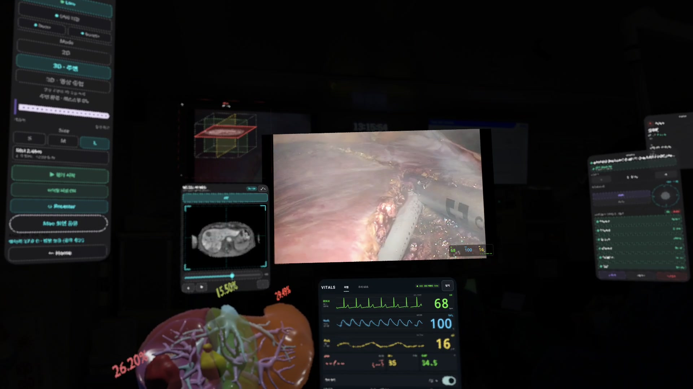
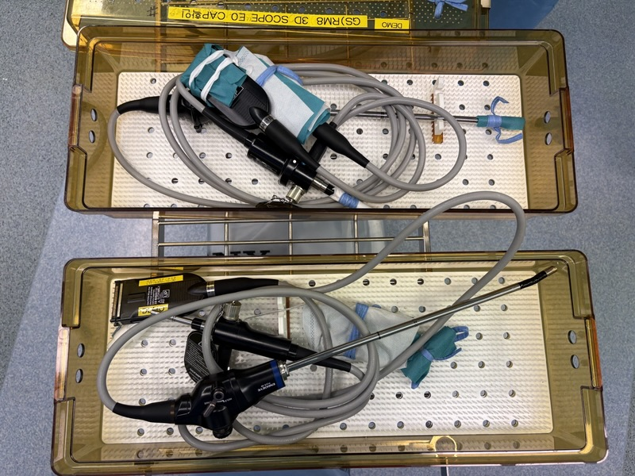
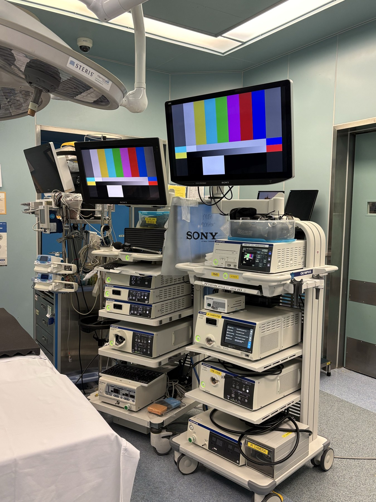
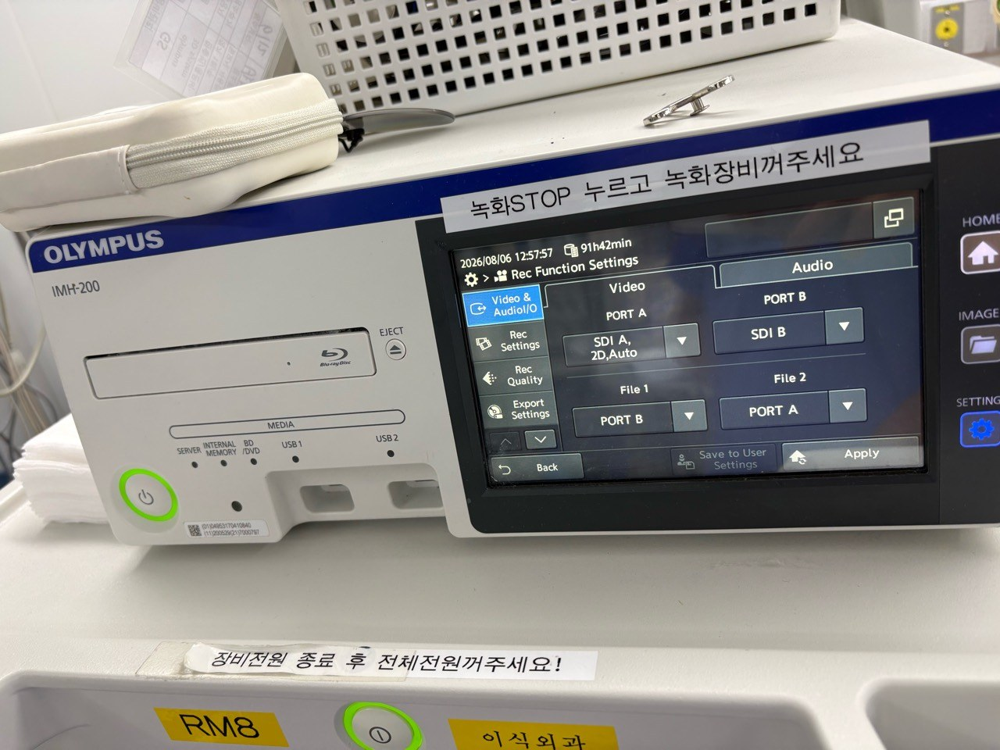
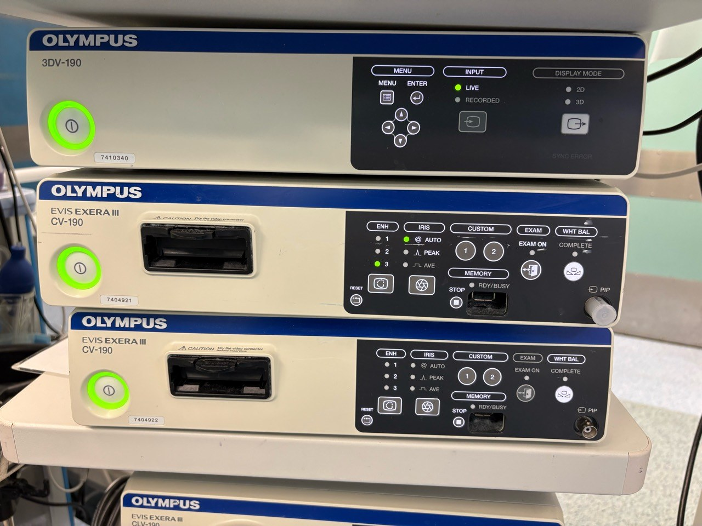

Surgical XR · Research Vision
Surgical video,
with information to support clinicians.
The goal is an XR surgical support environment that combines live endoscopic video with position markers, patient-specific 3D models and AI analysis results.
Connecting endoscopic video
Adjust streaming settings for endoscopic video,
then measure resolution, frame rate and interruptions in XR.
Patient-specific 3D models
aligned with surgical video
CT/MRI and patient-specific 3D models sit beside the endoscopic video as anatomical references.
The next research direction is registration: aligning the 3D model’s position and orientation with the surgical video.
Anatomical structures:
segmentation and outlines
The proposed image segmentation feature would identify anatomical structures in endoscopic video and outline their regions.
The display is being designed so clinicians can view the original video alongside the segmentation result.
Endoscopic video input for real-time analysis
The first step was to connect actual endoscopic video. The video processor’s output was captured and sent to XR while retaining the existing surgical monitor and recording connections.

The equipment used in the operating room had different output ports and 3D formats. Each device was checked for DVI/SDI connections and dual-input or single-SBS configurations.
The video processor
A video processor processes the endoscopic camera signal and sends it to a monitor or recorder. Its output also supplied the video for XR.
Existing operating room video path
Endoscope camera
Captures the surgical view and sends the video signal.

Photo 2Surgical monitor
Displays the video for the surgical team.

Photo 3 · Video 2Video recorder
Receives the video output and saves the surgical recording.

Photo 3DVI/SDI outputs and capture cards
The rear video output was connected to a converter and capture card. The capture card turns the incoming video into an input that a computer or headset can receive.
Wireless streaming through Mac and direct USB input
The existing monitor and recording connections were checked to identify an output for XR. For wireless streaming, the Mac receives and sends the video. For a direct connection, the capture card’s USB output connects to the headset.
Wireless streaming through Mac
Receive 2D/3D video and stream it to XR
Direct connection to Galaxy XR
USB connection used for STORZ 2D video
Dual-input compositing and single-SBS input
When left- and right-eye outputs were separate, the Mac combined both inputs into one side-by-side (SBS) frame. When the equipment output SBS directly, it was captured as a single input. The XR app splits the frame and displays each view to its corresponding eye.
CV-190Capture and combine two inputs
OTV-S300 · OTV-S700One input containing both views
Equipment tested
Output ports, capture setups and received video results for each device.

Photo 2OlympusCV-190
DVI-D · SBS / dual inputsSBS output from the 3DV-190, or separate outputs from two CV-190 units
Connection notes Photo 3Olympus
Photo 3OlympusOTV-S300
DVI-D · Single inputReceive both eye views combined by the processor
Connection notes Photo 2Olympus
Photo 2OlympusOTV-S700
SDI · Single inputCheck the output port and mode, then connect through a converter
Connection notes Photo 3 · Video 1STORZ
Photo 3 · Video 1STORZTC200 · TC300
DVI-D · 2D inputWireless streaming through Mac and direct input to Galaxy XR
Connection notesStreaming settings and resolution changes
The initial CV-190 tests used downscaling to reduce live-streaming latency between the Mac and Galaxy XR.
Compositing and streaming settings were later changed to send Full HD per eye. Received resolution, frame rate and interruptions were measured under each configuration.